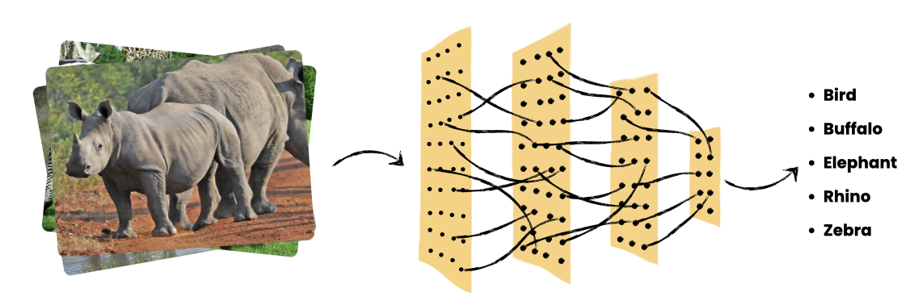

Sudan-5 Wildlife Challenge
Welcome to the SUDAN-5 Wildlife Challenge, an elite deep learning competition where students at the University of Juba compete to build the most robust image classifier for African wildlife and birds. This contest provides total architectural freedom: whether you choose to design a custom CNN from scratch, leverage Transfer Learning with a state-of-the-art backbone, or implement a cutting-edge Vision Transformer (ViT), the goal remains the same—mastering the classification of Buffalo, Elephant, Rhino, Zebra, and Bird. Your models will be ranked on a live leaderboard based on their Top-1 Accuracy against a secret, held-out test set, with inference latency serving as the ultimate tie-breaker for efficiency.

Model Ranking Procedure
- Model Evaluation: Each submitted model will be evaluated on the held-out test dataset and the Top-1 accuracy for each model will be calculated.
- Ranking: Participants will be ranked in descending order based on their model's Top-1 accuracy. The model with the highest Top-1 accuracy will be ranked first.
- Tie-breaking: If two or more models achieve the same Top-1 accuracy, the following tie-breaking criteria may be applied (in order of priority):
- Inference Time: The model with the shorter inference time will be ranked higher.
- Validation Accuracy: The model's accuracy on the provided validation set.
- Number of Parameters: The model with the fewer number of parameters will be ranked higher (to favor more efficient models).
Marks Procedure
- If you completed challenge 1 and 2 (meaning you trained and produced the models best_model.keras and best_finetuned_model.keras), the model with the higher accuracy will determined your final marks.
- If you completed challenge 1 and not 2, your marks will be determined by 50 percent of challenge 1 accuracy.
- If you completed challenge 2 and not 1, your marks will be determined by 50 percent of challenge 2 accuracy.
- If you completed neither challenges, your marks will be 0.
Legend:
A (90%-100%)
B (80%-89%)
C (70%-79%)
D (60%-69%)
E (50%-59%)
F (<50%)